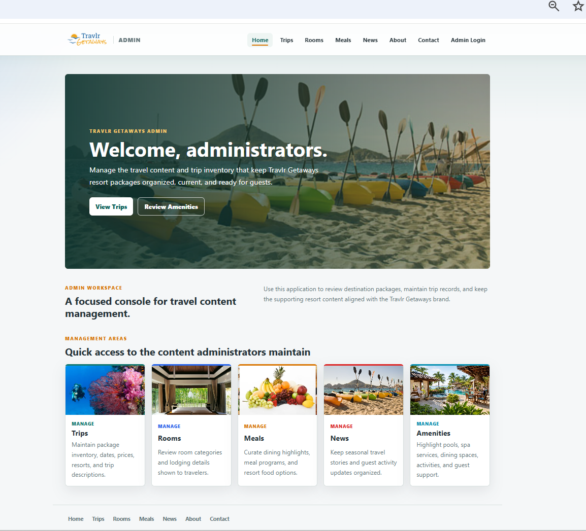
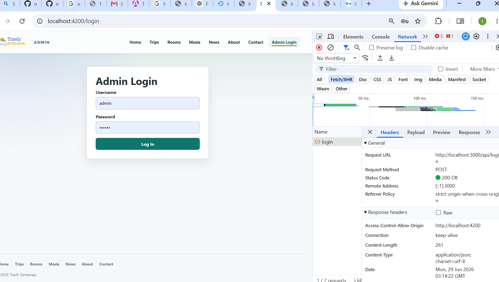
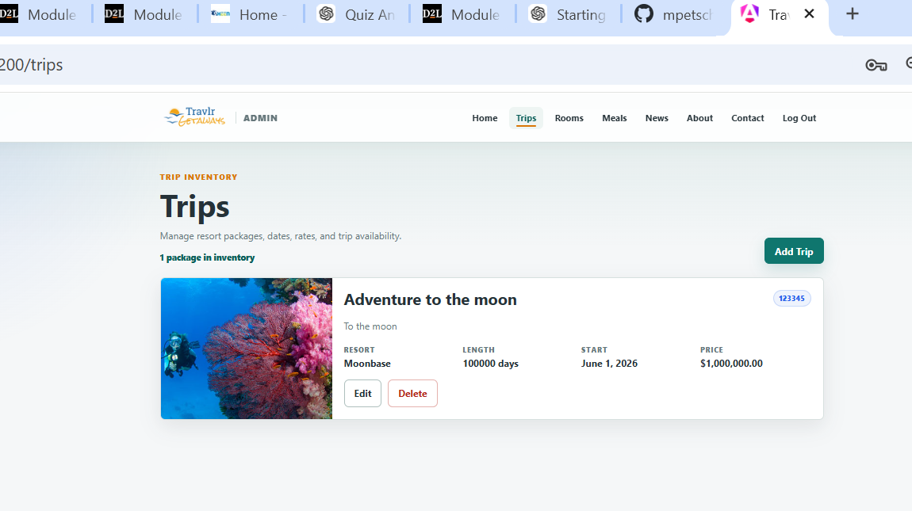
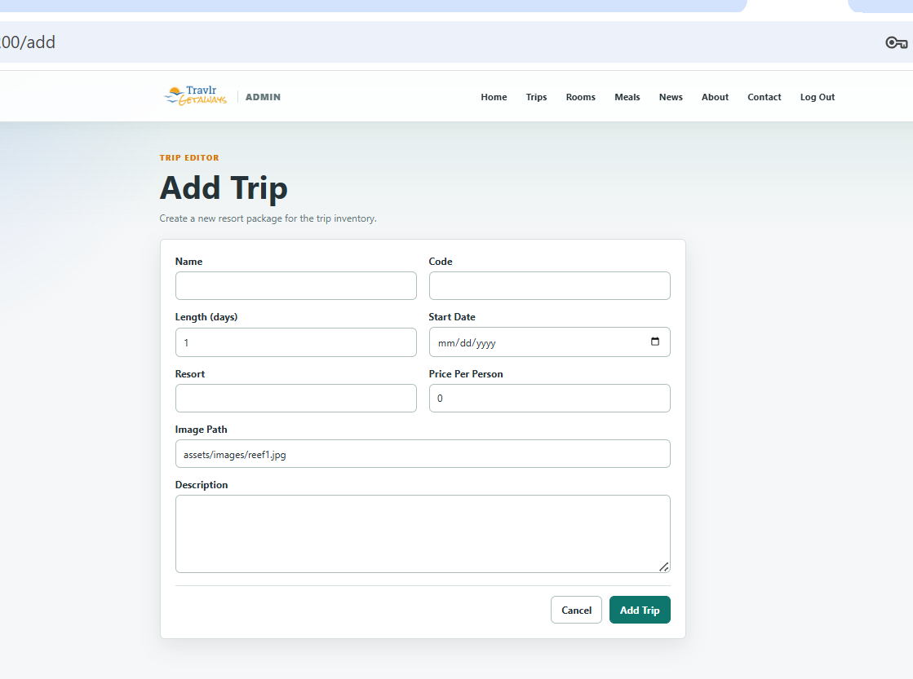
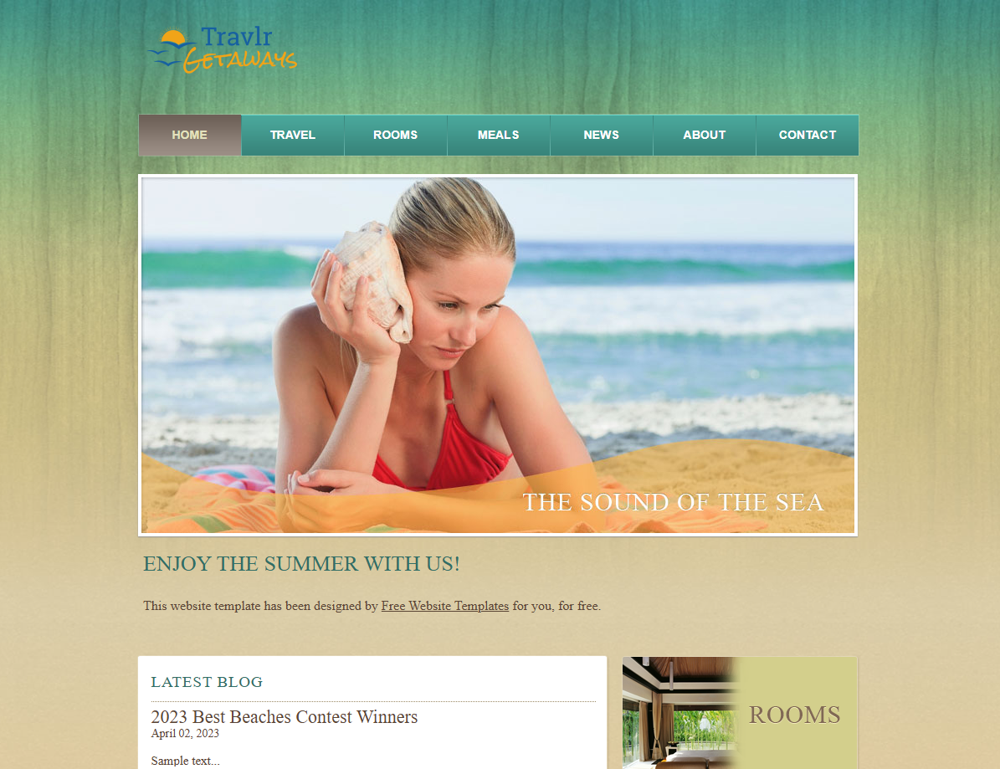

Secure Administrator Authentication
Administrators log in through the Angular client. The Express API validates credentials and returns a signed JWT authentication token for authenticated requests.
Capstone Artifacts
A completed full-stack administrative application that connects an Angular frontend, Express.js REST API, and MongoDB database with secure authentication and protected trip management workflows.
Project Overview
Travlr Getaways Admin is an administrative console for maintaining travel package inventory. The application allows authenticated administrators to manage trip records, including names, codes, resort details, trip lengths, start dates, prices, images, and descriptions. The finished project demonstrates full-stack communication between Angular, Express.js, and MongoDB while protecting administrative write operations with token-based authentication.

Completed Functionality
The final capstone implementation supports authenticated administration, persistent trip records, and clear frontend-to-backend communication.
Administrators log in through the Angular client. The Express API validates credentials and returns a signed JWT authentication token for authenticated requests.
The admin interface supports creating, reading, updating, and deleting trip records through protected REST API endpoints.
Trip and user records persist in MongoDB using Mongoose schemas, validation, indexes, and controlled database connection behavior.
The Angular admin client provides routed pages for login, dashboard content, trip inventory, and the add/edit trip form.
The Express API separates routes, controllers, services, middleware, models, and utilities for improved maintainability.
Create, update, and delete operations require a Bearer token, and the Angular add/edit route is guarded for authenticated users.
Architecture
The application follows a straightforward full-stack JavaScript flow where the Angular administrative client communicates with Express API endpoints that read from and write to MongoDB.
Application Screenshots
The screenshots below show the completed administrative login, dashboard, trip management workflow, and add-trip form.



Building the completed Travlr Getaways Admin project strengthened my understanding of how frontend, backend, authentication, and persistence layers work together in a full-stack application. I practiced integrating Angular components and services with Express routes, designing Mongoose schemas, securing administrative workflows, handling API errors, and validating data before it reaches the database.
The project also reinforced the importance of modular architecture. Separating routes, controllers, services, middleware, models, utilities, and Angular feature areas made the system easier to test, maintain, and explain as a professional software engineering portfolio artifact.

Original Artifact
Enhancement One
Enhancement Two
Enhancement Three